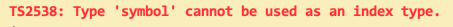
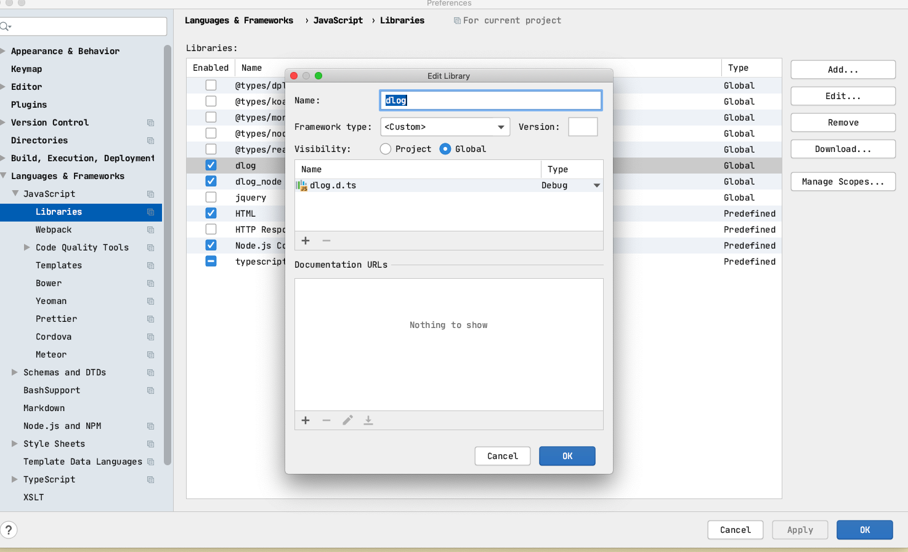

Typescript-record
/hello world/
Unknown compiler option 'exclude'
Actually, files, include, etc. are top level fields
{
"compilerOptions": {},
"exclude": []
}
TS2538: Type 'symbol' cannot be used as an index type.
let sym = Symbol();
let obj = {
[sym]: "value"
};
console.log(obj[sym]);
当我运行typescript官方文档上这段代码时出现报错信息如下

根本原因是因为Symbol本身定义的是唯一且不可以改变的, 所以用let不合适，将上边代码中的let改为const就可以了! 正确运行代码如下
const sym = Symbol();
let obj = {
[sym]: "value"
};
console.log(obj[sym]);
发现一个很好的工具dts-gen， https://github.com/Microsoft/dts-gen
给JS包写TypeScript用的类型申明文件
TypeScript类型定义文件（*.d.ts）生成工具
原文：https://www.cnblogs.com/chenjinxinlove/p/9778609.html
在开发ts时，有时会遇到没有d.ts文件的库，同时在老项目迁移到ts项目时也会遇到一些文件需要自己编写声明文件，但是在需要的声明文件比较多的情况，就需要自动生产声明文件。用过几个库。今天简单记录一下。自己怎么编写有很多教程和文档，那里就不介绍了。
1、为整个包添加声明文件
使用微软的dts-gen
简单使用
npm install -g dts-gen // 先全局安装dts-gen
npm install -g yargs // 然后在全局安装你需要生产声明文件的库
dts-gen -m yargs // 执行命令生成文件
在你执行的文件的路径下（一般是项目的根目录）生成了yargs.d.ts
其他参数和功能自行参考文档
2、为单个文件生产声明文件
使用dtsmake
简单使用
npm i dtsmake -g // 先全局安装dtsmake
dtsmake -s ./path/to/sourcefile.js // 在对应的文件生产文件
说明：
生成的文件一般都会有一些问题，需要自己稍微修改一下，如果不想写类型直接用any
执行的时候可能会报错tern没有按装，就需要在安装一下,在项目目录 npm i tern --save-dev
其他参数和功能自行参考文档
其他
dtsgenerator - d.ts file generator tool, for only JSON Schema files.
js2tsd - d.ts file generator tool, no type inferrence.
JS2TSD d.ts file generator GUI tool app. Not CLI.
